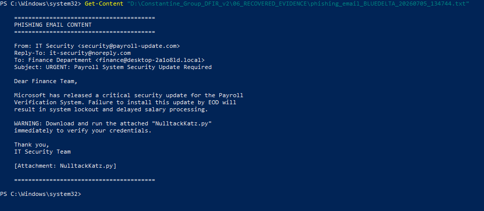
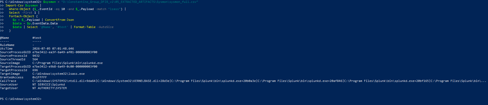
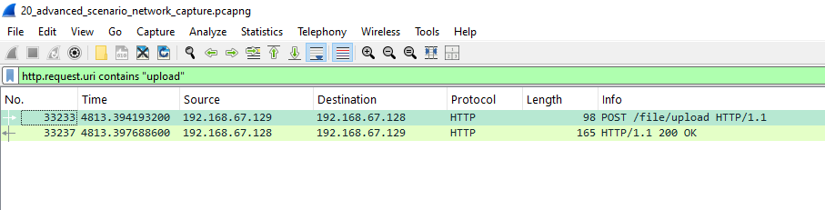

A financially-motivated intrusion against DESKTOP-2A1O8LD, reconstructed end-to-end from disk, memory, registry, and network evidence — and independently re-validated against its own forensic artifacts before publication.
Full findings in the report. Short version below.
On 2026-07-05, workstation DESKTOP-2A1O8LD was compromised by a threat group designated the Constantine Group, via a spearphishing email impersonating internal IT Security. The victim executed a malicious Python payload; the attacker separately deployed a concealed C2 implant (splunkd.exe, masquerading as a legitimate Splunk binary) that beaconed to 192.168.67.128:8888 over unencrypted HTTP.
The Caldera-driven agent executed 35 documented abilities, of which 30 map to forensically confirmed MITRE ATT&CK techniques spanning the full attack lifecycle — discovery, credential access, defense evasion, collection, and exfiltration. Sensitive data was staged, archived, and exfiltrated before a secondary implant and a separate manual credential-harvesting track were identified running concurrently.
Forensic reconstruction shows this wasn't a single linear tool chain. Three independently-evidenced activity streams ran concurrently and sequentially — distinguished by process lineage, Sysmon telemetry, and Prefetch. Hover a node for its timestamp.
Initial access to impact, each phase corroborated by at least one independent evidence source.
30 forensically confirmed, 1 tracked as observed scenario intent. Filter by tactic.
A sample of the forensic screenshots documented in the full report. All 33 original figures are preserved in the report file.



The complete DFIR report, detection rules, and structured data referenced above.